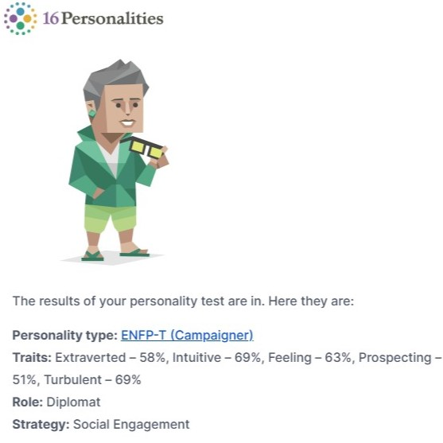
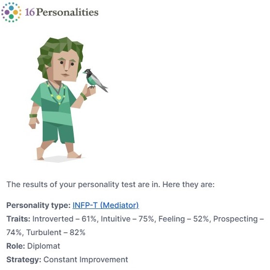

Mirror
Besides taking the 16P test last week, I also found my old results from back in 2019, so I get to compare them a bit. However, as I was researching into the 16P test, I learned that it's actually notoriously inaccurate, and misrepresents the MBTI types, so I'm not sure how much of it to take to heart. That said, I will still be looking at it, just to see what's up.
Firstly, let's post some screenshots.


The first thing you'll quickly notice is the subtle change from E to I, for the first letter, with the rest staying the same. Apparently, I've become more introverted over the last 6 or so years. This is something I can find myself in. Back in 2019 I was still in school, and adapted to that enviroment. In the last few years I've been a lot more solitary, and now I find comfort in that. While I'm still very much a social individual that thrives on social interactions, it's no longer what I find my comofort it, it appears.